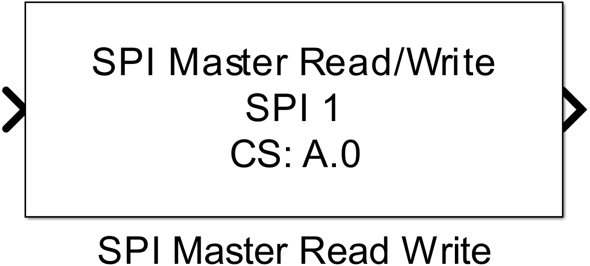
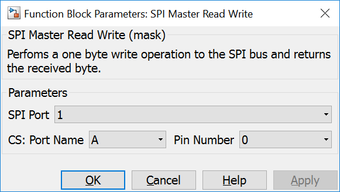

5.4.2. SPI Master Read Write
5.4.2.1. Description
Performs a one byte write operation to the SPI bus and returns the response byte.
{kind=link}
The block writes the byte value provided at the input port each time it is executed. At the output port the received byte is provided.
5.4.2.2. Data Type Support
The input port expects an uint8 data type. The output port writes values with an uint8 data type.
Port sizes can be a one-dimensional vector which must be the same for input and output.
5.4.2.3. Parameters and Dialog Box
SPI Port
Selects the SPI peripheral wich is configured by an SPI Master Config block.
Port Name/Pin Number (CS)
Configuration of the MCU Pin the device’s chip select input is connected to.
5.4.2.4. Example
Please see the SPI Master example shown in SPI Master Config documentation.
5.4.2.5. Code Generation
Instance names of mbed SPI classes are created by concatenating spi and <SPI Port>.
Global parts
creates a global instance
// creates a DigitalOut instance for the specific chip select with an unique name
DigitalOut cs_spi<SPI Port>_<Port Name CS>_<Pin Number CS>(P<Port Name CS>_<Pin Number CS>);
Initialization Function
and one line in void <Model Name>_initialize(void) function
// deselects the device
cs_spi<SPI Port>_<Port Name CS>_<Pin Number CS> = 1;
in <Model Name>.cpp.
Step Function
creates several lines in void <Model Name>_step(void) function
// selects the device
cs_spi<SPI Port>_<Port Name CS>_<Pin Number CS> = 0;
// writes synchronously the input vector byte for byte to the spi device and writes the received bytes to the block output port
// number of written and received bytes has to be indentically
for(int i=0; i < <Length of Inputbuffer>; i++)
<Addr of Outputbuffer>[i] = spi<nSPI Port>.write(<Addr of Inputbuffer>[i]);
// deselects the device
cs_spi<SPI Port>_<Port Name CS>_<Pin Number CS> = 1;
when size of input vector is larger than 1 or
// selects the device
cs_spi<SPI Port>_<Port Name CS>_<Pin Number CS> = 0;
// writes synchronously the block input byte to the spi device and writes the received byte to the block output port
<output port value> = spi<nSPI Port>.write(<input port value>);
// deselects the device
cs_spi<SPI Port>_<Port Name CS>_<Pin Number CS> = 1;
when size of input vector equals 1